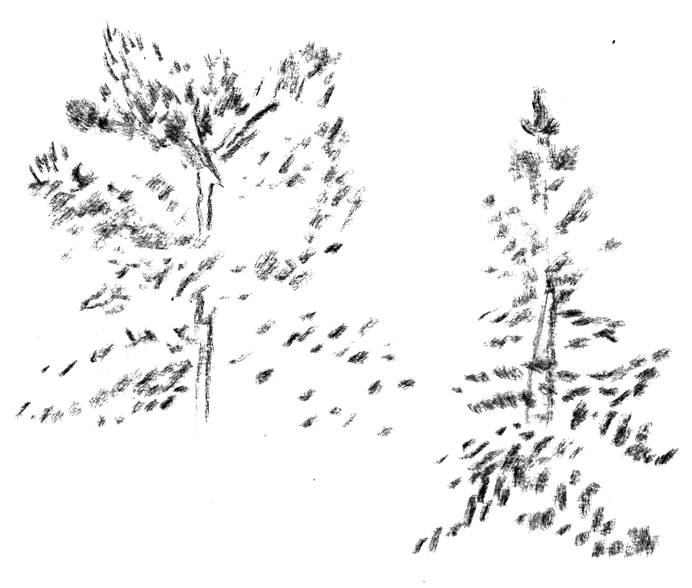

nature
(different stages of pine's life)
Measured in the natural lifespan of pines, most of them are cut at 60 to 70 years old when they are about to come of age. Mänty means pine. A fully grown pine is called petäjä. At around 100 to 150 years old, the pine has reached its full height and continues growing only width from its top. It is said to have a lakkapää top. Such an old pine is called either honka, or aihki, a word derived from Sámi languages.
Unlike one might imagine, you can’t always tell the age of a pine by its height or width. The yearly growth can be very modest, and a real clue might be a twisted and knobbly trunk. When a tree dies standing, it’s called a kelo.
We have exceptional data about the forests of Finland dating back to 1750. Forests have been used intensively for centuries in Southern Finland. During the last 100 years, some recovery has happened in some of the metrics, but not in the age of trees. In Northern Finland the amount of forests used for forestry have increased, and the amount of forests with an average age over 120 years have decreased from 55% to 17%. According to professor Mikko Mönkkönen averages can hide significant changes: the forests of Southern Finland have become more homogenous. We have already lost many forests valuable to biodiversity.
At the forest level, the age of the forest is typically determined by the age of the main tree species. The visualisations use data from National Forest Inventory or Finland in which the age of the forest is the tree basal area weighted average age of living trees.
Source: Natural Resources Institute Finland